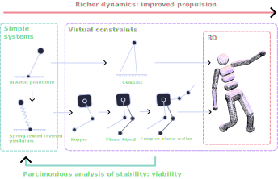
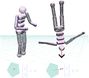
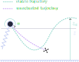
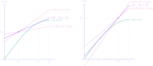

- Yeadon, Maurice R. "Aerial movement." Biomechanics in sport: performance enhancement and injury prevention (2000): 273-283.
- Chen, Yu-Ming. Toward High-Performance Simple Models of Legged Locomotion. Diss. University of Pennsylvania, 2023.
- Tassa, Yuval, Tom Erez, and Emanuel Todorov. "Synthesis and stabilization of complex behaviors through online trajectory optimization." 2012 IEEE/RSJ International Conference on Intelligent Robots and Systems. IEEE, 2012.
- Radosavovic, I., Xiao, T., Zhang, B., Darrell, T., Malik, J., & Sreenath, K. (2024). Real-world humanoid locomotion with reinforcement learning. Science robotics, 9(89).
- E. R. Westervelt, J. W. Grizzle and D. E. Koditschek, "Hybrid zero dynamics of planar biped walkers," in IEEE Transactions on Automatic Control, vol. 48, no. 1, pp. 42-56, Jan. 2003
- Griffin B, Grizzle J. Nonholonomic virtual constraints and gait optimization for robust walking control. The International Journal of Robotics Research. 2017
- Saranli, U., Arslan, Ö., Ankarali, M.M. et al. Approximate analytic solutions to non-symmetric stance trajectories of the passive Spring-Loaded Inverted Pendulum with damping. Nonlinear Dyn 62, 729-742 (2010).
- S. Le Cleac'h et al., "Fast Contact-Implicit Model Predictive Control," in IEEE Transactions on Robotics, vol. 40, pp. 1617-1629, 2024
- Jallet, W., Bambade, A., Arlaud, E., El-Kazdadi, S., Mansard, N., & Carpentier, J. (2025). Proxddp: Proximal constrained trajectory optimization. IEEE Transactions on Robotics.
- Spong, M. W. (1999). Passivity based control of the compass gait biped. IFAC Proceedings Volumes, 32(2), 506-510.
- I. Poulakakis and J. W. Grizzle, "The Spring Loaded Inverted Pendulum as the Hybrid Zero Dynamics of an Asymmetric Hopper," in IEEE Transactions on Automatic Control, vol. 54, no. 8, pp. 1779-1793, Aug. 2009
Rapport de première année de doctorat
Gabin Lembrez
- Contexte
- Problématique
- Résultats
- Noyau de viabilité du pendule inverse
- Noyau de viabilité du pendule sur ressort
- Commande basée sur la viabilité
- Extension par la théorie des contraintes virtuelles
- Prochaines étapes
CONTEXTE

Motivations
La locomotion bipède du point de vue des êtres vivants :
- Mouvements "fluides" et agiles
- Utilisation des couplages (Yeadon, 2000)
- Mobilisation de tous les effets dynamiques
Quelles difficultés en robotique ?


Etat de l'art
- Modèles simples dérivés du pendule inverse (Chen 2023)
- Optimisation de trajectoire et commande prédictive (Tassa et al. 2012 )
- Contraintes virtuelles : stabilisation de trajectoires périodiques par linéarisation partielle ( Westervelt et al. 2003)
- Apprentissage par renforcement : émergence de comportements agiles (Radosavovic et al., 2024 )
Problématique
Concevoir un méthode de commande pour robots à jambes dynamiques
- Générale
- Mobilisant les effets dynamiques
- Basée modèle
- Interprétable
Notre approche


Noyau de viabilité
Définition
Le noyau de viabilité $\mathcal{V}$ est l'ensemble des états à partir desquels il existe une commande permettant d'éviter un ensemble d'états d'échecs $\mathcal{F}$ (Wieber, 2008).
\[ \begin{align} \mathcal{F} &= \left\{ x\in\mathcal{X} \; | \; \textit{Le robot est au sol} \; \right\} \\ \mathcal{V} &= \left\{ x(0)\in\mathcal{X} \; | \; \forall t>0, \exists u(t)\in\mathcal{U}: x(t)\notin \mathcal{F} \right\} \end{align} \]RESULTATS
Noyau de viabilité du pendule

Modélisation
- Représentation minimaliste d'un pas
- Le couple transmissible est supposé limité $$u<\bar u$$
- L'actionneur a-t'il assez de puissance pour compléter le pas avant que le pendule ne tombe ?
Noyau de viabilité du pendule

Théorème :
$x=(\theta,\dot{\theta})\in \mathcal{V} $ si l'une des conditions suivantes est vérifiée :- $\dot{\theta}>0$ et $\bar{u}>1$
- $\dot{\theta}<0$ et $\bar{u}\theta > \frac{l}{2g}\dot{\theta}^2+\sin\theta$
- $\dot{\theta}>0$, $\bar{u}<1$ et $\arccos(\bar{u})<\theta$
- $\dot{\theta}<0$, $\bar{u}<1$ et $\arccos(\bar{u})>\theta$
- $\bar{u}<1$, $sign(\dot{\theta})\arccos(\bar{u}) < sign(\dot{\theta})\theta$ et \[ \bar{u} > \frac{\sqrt{1-\bar{u}^2}-\frac{l}{2g}\dot{\theta}^2 - \sin\theta}{\arccos (\bar{u})- \theta} \]
Viabilité du pendule sur ressort

Viabilité du pendule sur ressort

Mise en forme du problème
- La viabilité a du sens vis à vis de la dynamique des actionneurs
- On choisit une modélisation simple
- La viabilité est approchée à partir d'une contrainte de hauteur minimale
\[
\mathcal{S} = \left\{ x \; | \; \exists u(t)\in\mathcal{U}:z_a(x)>\bar{z} \; \right\} \subset \mathcal{V}
\]
Viabilité du pendule sur ressort

Approximation de la dynamique
Sous des hypothèses raisonnables, on peut approcher la dynamique au sol par un modèle intégrable d'oscillateur harmonique (Saranli et al., 2010).
\[
\begin{align}
r(t) &= Me^{-\xi\omega_0 t}\cos(\omega_d t + \phi) \\
\theta(t) &= \alpha + \beta t + \gamma e^{-\xi\omega_0 t}\cos(\omega_d t + \psi)
\end{align}
\]
On peut estimer la hauteur du prochain saut.
Commande basée sur la viabilité

Contrôleur :
Objectif : rendre l'ensemble $\mathcal{S}\subset\mathcal{V}$ invariant \[ \begin{cases} u^* = \text{argmin} \quad J(x_n,u) \\ \textbf{s.t.} \quad x_{n+1} \in \mathcal{S} \end{cases} \]
Commande basée sur la viabilité
Performances :
- Le contrôleur permet d'accomoder en temps réel des commandes de l'utilisateur
- Performances indépendantes de la vitesse de déplacement
- Une définition naturelle de marges de robustesse
Extension : contraintes virtuelles

Extension : contraintes virtuelles

Objectif : contraindre le système à exister sur un espace restreint par linéarisation partielle. ( Westervelt et al., 2003 - Griffin et al., 2017 )
Construction des contraintes virtuelles :
\[
\theta^* = \min_{\theta} J(\theta)
\]
sous contraintes :
\[
\begin{align}
|u| & < \bar u \\
z & \in \mathcal{V}
\end{align}
\]
Commande basée sur la viabilité

Analyse et perspectives :
- La définition "naïve" de la contrainte ne permet pas d'estimer la hauteur du prochain apex
- Il faut écrire la zéro-dynamique
- Peut être utilisé pour initialiser la recherche d'optimum
PROCHAINES ETAPES
Court terme


- Commande du compas (Spong, 1999) à partir du noyau de viabilité du pendule iverse
- Finalisation de la commande du sauteur en boucle fermée
- Généralisation à plusieurs membres
Long terme
- Approche systématique de la conception des contraintes
- Passage en 3 dimensions
- Application à des systèmes réels
Références
Viabilité du pendule inverse
L'état initial $(\theta_0,\dot\theta_0)$ est viable s'il n'existe pas d'angle $\bar \theta \in [0;\pi/2]$ solution de :
\[ mgl \sin\bar\theta = E_0 + \bar u (\theta - \theta_0) \] 